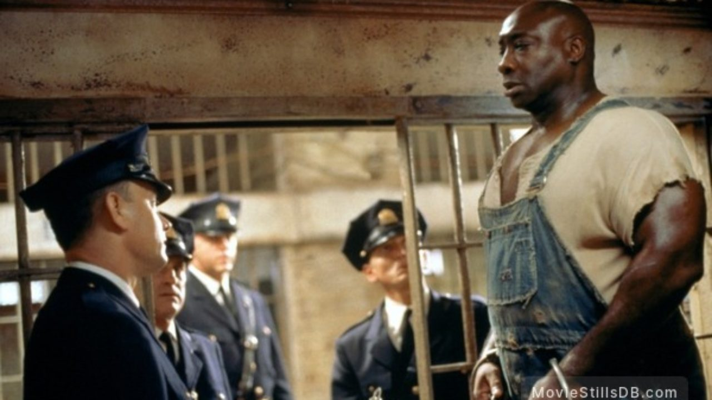

Head info

The Green Mile is a 1999 American fantasy crime drama film written, directed and co-produced by Frank Darabont and based on the 1996 novel by Stephen King. It stars Tom Hanks as a death row prison guard during the Great Depression who witnesses supernatural events following the arrival of an enigmatic convict (Michael Clarke Duncan) at his facility. David Morse, Bonnie Hunt, Sam Rockwell, and James Cromwell appear in supporting roles. The film premiered in the United States on December 10, 1999, to positive reviews from critics, who praised Darabont's direction and writing, emotional weight, and performances (particularly for Hanks and Duncan), although its length received criticism. It was a commercial success, grossing $286.8 million from its $60 million budget, and was nominated for four Academy Awards: Best Picture, Best Supporting Actor for Duncan, Best Sound, and Best Adapted Screenplay.
Plot
At a Louisiana assisted-living home in 1999,
retiree Paul Edgecomb begins to cry while watching the film Top Hat. His companion Elaine
becomes concerned, and Paul explains to her that the film reminded him of events that he
witnessed when he was an officer at Cold Mountain Penitentiary's death row, nicknamed "The Green
Mile".
In 1935, Paul supervised corrections officers Brutus "Brutal" Howell, Dean Stanton, Harry
Terwilliger, and Percy Wetmore, reporting to Warden Hal Moores. Percy, the nephew of the state
governor's wife, demonstrates a severe sadistic streak but flaunts his family connections to
avoid punishment. He is particularly abusive towards prisoner Eduard "Del" Delacroix, breaking
his fingers and killing his pet mouse, Mr. Jingles.
Paul is introduced to John Coffey, a physically imposing but gentle and timid black man
sentenced to death after being convicted of raping and murdering two young white girls. He joins
Del and another condemned convict, Native American Arlen Bitterbuck, the first to be executed in
the electric chair. The officers are forced to deal with psychotic new inmate William "Wild
Bill" Wharton, who frequently causes trouble by assaulting the officers and racially abusing
John, forcing them to restrain him in the block's padded cell on more than one occasion.
After John heals Paul's severe bladder infection by touching him, and later resurrects Mr.
Jingles, Paul gradually realizes that John possesses a supernatural ability to heal others. Paul
doubts whether someone with the power to perform divine miracles is truly guilty of the crime.
In exchange for resigning from the penitentiary and accepting a job at an insane asylum, Percy
is allowed to oversee Del's execution. At the execution, Percy deliberately avoids soaking the
sponge used to conduct electricity to Del's head, leading to Del suffering a gruesome and
agonizing death by electrocution, with John forced to feel Del's pain as well. Paul and the
other officers punish Percy by forcing him to spend a night in the padded cell. While Percy is
locked away, they drug Wharton and secretly smuggle John out of the prison so that he can use
his powers to heal Warden Moores' wife Melinda of a brain tumor, saving her life. After Percy is
released from the padded room, the others threaten to report him for his various acts of
misconduct if his behavior continues.
John uses his powers to "release" Melinda's affliction into Percy's brain, causing Percy to
shoot Wharton dead. Soon after, John reveals in a vision to Paul that Wharton was the true
culprit of the crimes for which he was wrongfully condemned, releasing his supernatural energy
into Paul in the process. Having gone into a catatonic state, Percy is ironically committed to
the same insane asylum where he had planned to work after resigning from the prison.
After realizing that John is innocent, Paul becomes distraught at the thought of executing him
and offers to let him go free. Although equally distraught at the outcome, John tells Paul that
the execution would be an act of mercy, as he views the world as a cruel place and is in
constant pain from the suffering that people inflict upon each other. Mentioning that he has
never seen a movie before, John watches Top Hat with Paul and the other officers as his last
request. As John is taken to be executed, he is mercilessly scorned by the parents of the two
girls who still believe him to be guilty. He asks not to have the hood which normally covers the
face of the prisoner in the electric chair placed over his head as he is afraid of the dark, and
Paul agrees. Paul, Brutal, Dean, Harry and the other officers watch in great sorrow, crying and
holding back tears, as John is executed on Paul's order.
Back in the present day, Paul tells Elaine that John's execution was the last that he and Brutal
witnessed, as they both subsequently resigned from the prison and took up jobs in the juvenile
system. Paul reveals to Elaine that Mr. Jingles is still alive, having been blessed with a
supernaturally long life thanks to John's healing touch. He also reveals that he is now 108
years old; he was 44 when John was executed. While Elaine sees Paul's long life as another of
John's miracles, Paul speculates that he may have been condemned to linger on Earth and outlive
all of his loved ones as a divine punishment for John's execution. Paul later attends Elaine's
funeral and muses on how much longer he has left to live, saying, "We each owe a death. There
are no exceptions. But, oh, God... sometimes, the Green Mile seems so long."
Cast

Tom Hanks as Paul Edgecomb
Dabbs Greer as old Paul Edgecomb
David Morse as Brutus "Brutal" Howell
Bonnie Hunt as Jan Edgecomb
Michael Clarke Duncan as John Coffey
James Cromwell as Hal Moores
Michael Jeter as Eduard "Del" Delacroix
Graham Greene as Arlen Bitterbuck
Doug Hutchison as Percy Wetmore
Sam Rockwell as William "Wild Bill" Wharton
Barry Pepper as Dean Stanton
Jeffrey DeMunn as Harry Terwilliger
Patricia Clarkson as Melinda Moores
Harry Dean Stanton as Toot-Toot
Eve Brent as Elaine Connelly
William Sadler as Klaus Detterick
Paula Malcomson as Marjorie Detterick
Brent Briscoe as Bill Dodge
Bill McKinney as Jack Van Hay
Gary Sinise as Burt Hammersmith